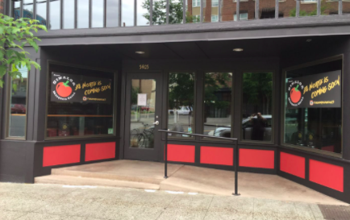

The one we rated second best for a resturaunt in Seattle is Restaurante Marche. Here, they have phenomenal French options, one of which being a brown butter trout. This resturaint is located just a half mile from the dock of the ferry on Bainbridge Island.
 The one we rated third best for a resturaunt in Seattle is Restaurante Marche. Here, they have phenomenal French options, one of which being a brown butter trout. This resturaint is located just a half mile from the dock of the ferry on Bainbridge Island.